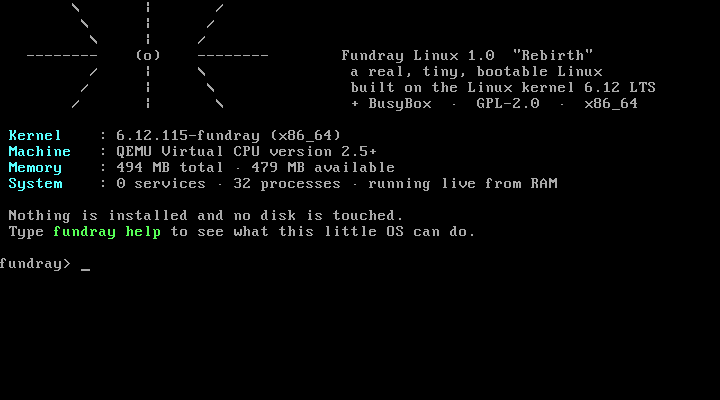

Fundray Linux
A real, bootable live Linux distribution, assembled by the
Fundray project from the official Linux 6.12 LTS kernel, a static BusyBox userland
and our own fundray command line. ~6 MB. Boots in seconds.
Zero services. Nothing touches your disks.
An actual boot, captured from the emulator
The screenshot below is a raw VGA frame from QEMU while
Fundray Linux boots its live system — the sunburst banner, the live memory numbers
and the fundray> prompt are the real thing. The serial log next to it
is the captured boot session from our automated test.

[ 0.000000] Linux version 6.12.115-fundray ...
SeaBIOS -> GRUB 2.12 -> bzImage (2.4 MB)
\ | /
\ | /
-------- (o) -------- Fundray Linux 1.0 "Rebirth"
/ | \
/ | \ a real, tiny, bootable Linux
/ | \ built on the Linux kernel 6.12 LTS
Kernel : 6.12.115-fundray (x86_64)
Memory : 494 MB total - 479 MB available
System : 0 services - 32 processes - running live from RAM
fundray> uname -a
Linux fundray 6.12.115-fundray #1 SMP x86_64 GNU/Linux
fundray> fundray clean
Page cache dropped. (Live system - this only frees RAM.)
fundray> fundray bench
Pushed 2000 MB through the CPU in 4.84s (~413 MB/s)
fundray> fundray rebirth
Everything is clean. Rebooting - your machine, reborn.
reboot: Restarting systemWhat's inside the ~6 MB
Linux 6.12.115-fundray
The official LTS kernel from kernel.org, configured with tinyconfig
plus one honest fragment: VGA + serial consoles, initramfs, USB keyboards, ACPI,
EFI stub and the common wired NIC drivers. 2.4 MB. The exact config ships in
the kernel itself (zcat /proc/config.gz).
Static BusyBox 1.37.0
One static binary with ~270 unix tools — the entire userland. Built from source with line-editing terminal queries turned off, so the console behaves even on dumb serial lines. No libc, no package manager, nothing else.
ctty + fundray CLI
ctty is our 30-line getty replacement: one shell per console,
supervised by PID 1, with proper job control. fundray is the
front door — honest, tiny, and it never pretends the OS is something it isn't.
One command, zero lies
fundray info
Kernel, memory, uptime, process count — and the services line always reads 0, because Fundray Linux has no service manager at all.
fundray clean
Drops the page
cache through /proc/sys/vm/drop_caches. On a live RAM-only system that
is exactly what it says: RAM freed, nothing else touched.
fundray net
Brings the wired NIC up via DHCP (Intel e1000/e1000e, Realtek r8169, virtio). Wi-Fi needs firmware that does not fit in a tiny kernel — honest v1 scope.
fundray services
Prints the full process list as proof: kernel workers, PID 1, your shells. Nothing else.
fundray bench
A silly-but-honest CPU throughput probe: pushes 2000 MB through the CPU and reports the rate it measured on your machine.
fundray rebirth
The little ceremony: a spinner, "your machine, reborn", and a clean reboot. The Fundray spirit, ported to an actual Linux PID 1.
What it is — and what it isn't
It is
A real operating system: it boots from the GRUB menu on BIOS and UEFI machines,
runs entirely from RAM, gives you a working Linux shell with ~270 tools, wired
networking, and a PID 1 that supervises everything. Boot-tested end-to-end in
QEMU, including fundray rebirth performing a clean reboot.
It isn't
A desktop distribution — v1 is console-only, live-only (nothing persists across reboots), with wired-only networking. It is also not a replacement for Windows: the Fundray toolkit for Windows 7 SP1/10/11 is still exactly what the docs say — a reversible tweak tool, not an OS. Fundray Linux is the separate, actually-bootable side of the project.
Download Fundray Linux 1.0
fundray-linux-1.0-x86_64.iso
~6.3 MB live ISO. Boot it in QEMU/VirtualBox or write it to a USB stick
(dd, double-check the device name).
Build it yourself
Everything is in the repo: kernel fragment, init, CLI, ctty, GRUB config and a one-command builder that verifies every download.
One command, fully reproducible
$ git clone https://github.com/gefrus112/fundray.git
$ cd fundray/os
$ ./build.sh # kernel.org + busybox.net -> ~6 MB ISO (~15-30 min)
$ ./qemu-test.sh # boots your ISO, checks the whole tool chain
BOOT TEST: PASSThe builder verifies the kernel tarball against kernel.org's published sha256 before unpacking, compiles the kernel and BusyBox from source, and assembles the ISO with GRUB for BIOS and UEFI. Full details in os/README.md.
Two flavors of Fundray
Fundray Linux boots the machine. Fundray for Windows makes the Windows you already have feel like new. Both are honest about what they are.